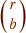

Designs using all combinations of treatments
A balanced experiment for r treatments in blocks of size b (where r > b) can always be designed using all possible combination of b out of r treatments in different blocks. This requires the use of  blocks.
For example, the table below shows a balanced design for 6 treatments (A, B, C, D, E & F) in blocks of size 3, using all 20 combinations of 3 out of the six treatments in one block.
| Block | Treatments | Block | Treatments |
|---|---|---|---|
| 1 2 3 4 5 6 7 8 9 10 |
A B C A B D A B E A B F A C D A C E A C F A D E A D F A E F |
11 12 13 14 15 16 17 18 19 20 |
B C D B C E B C F B D E B D F B E F C D E C D F C E F D E F |
Balanced designs with fewer blocks
Unfortunately the necessary number of blocks is usually too high for this type of design if there are many different treatments. For example, in an experiment for 20 treatments in blocks of size 6, we would need 38,760 blocks to use each possible combination of 6 out of the 20 treatmens in one block.
However balanced designs can often be found using fewer than blocks. For example, the design below is balanced but only uses half of all possible combinations of three treatments in its blocks.
| Block | Treatments |
|---|---|
| 1 2 3 4 5 6 7 8 9 10 |
A B E A B F A C D A C F A D E B C D B C E B D F C E F D E F |
It is not easy to find balanced designs using fewer than blocks by hand and computer software should be used.
Corn yields
An experiment was conducted by the North Carolina Agricultural Experiment Station in 1943 to assess 10 corn hybrids and compare them to three standard varieties. The experiment was laid out as a balanced incomplete block design using 13 blocks of size 4 that were located in 13 different parts of the state. The table below shows the corn yields (pounds per plot) for the 13 different treatments.
| Block | Treatments & Yields | |||
|---|---|---|---|---|
| 1 2 3 4 5 6 7 8 9 10 11 12 13 |
(C) 25.3 (C) 23.0 (J) 16.2 (B) 27.3 (G) 23.4 (D) 30.6 (A) 34.7 (C) 34.4 (A) 38.2 (B) 28.7 (A) 36.6 (A) 31.8 (B) 30.3 |
(F) 19.9 (D) 19.8 (K) 19.3 (E) 27.0 (H) 30.5 (E) 32.4 (E) 31.1 (E) 32.4 (B) 32.9 (D) 30.7 (D) 31.1 (F) 33.7 (F) 31.5 |
(I) 29.0 (H) 33.3 (L) 31.7 (H) 35.6 (I) 30.8 (F) 27.2 (I) 25.7 (G) 33.3 (C) 37.3 (I) 26.9 (G) 31.1 (H) 27.8 (G) 39.3 |
(K) 24.6 (L) 22.7 (M) 26.6 (K) 17.4 (J) 32.4 (J) 32.8 (L) 30.5 (M) 36.9 (J) 31.3 (M) 35.3 (K) 28.4 (M) 41.1 (L) 26.7 |
The analysis of variance table below shows the sums of squares explained by the blocks and treatments.
From the p-value associated with the treatments (0.2378), we should conclude that:
There is no evidence of any differences between the yields of the 13 types of corn.
In block designs, there is rarely any interest in testing for differences between the blocks, so the term for blocks is usually added to the model before the treatments. However the diagram above does the terms in the anova table to be reordered. Drag the red arrows to add the term for blocks after the treatments.
Observe that the sum of squares change because the blocks and treatments are non-orthogonal in incomplete designs. The p-value for the corn varieties is now under 0.05, but this should not be used to conclude that there are differences between the varieties since neither of the two models that this p-value is comparing takes account of the differences between the blocks.
Treatments should always be compared after the variation explained by blocks has been explained.